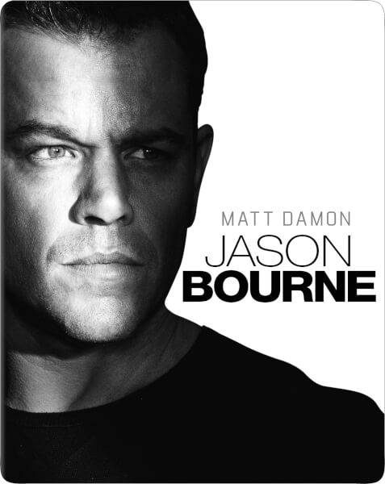
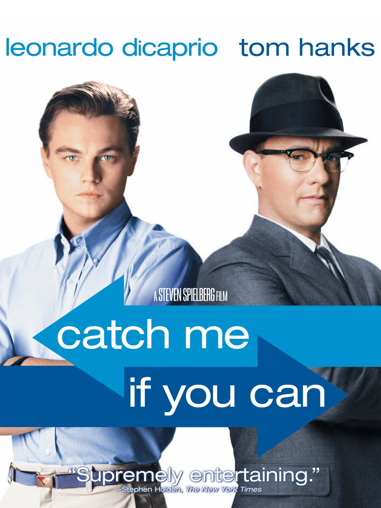

My favorites movies
|  |
Jason Bourne TrilogyThe Bourne films are a series of action spy thriller films based on the character Jason Bourne (Matt Damon), a CIA assassin suffering from extreme memory loss who must figure out who he is, created by author Robert Ludlum. |

|
Denzel Washington - The EqualizerThe Equalizer is a 2014 American neo-noir vigilante action thriller film directed by Antoine Fuqua and written by Richard Wenk, loosly based on the 1980s TV series The Equalizer. It stars Denzel Washington, Marton Csokas, Chloë Grace Moretz, David Harbour, Bill Pullman and Melissa Leo. |
|  |
Catch me if you canThe film is based on the life of Frank Abagnale, who, before his 19th birthday, successfully performed cons worth millions of dollars by posing as a Pan American World Airways pilot, a Georgia doctor and a Louisiana parish prosecutor. His primary crime was check fraud; he became so experienced that the FBI eventually turned to him for help in catching other checking forgers |